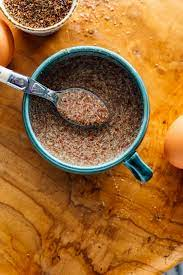

the easiest to make recipes vegan friendly!
Whether you are making cookies, bread, or cupcakes, flax eggs are a must for vegan baking! They are super simple to make, and add Omega fatty acids to your dish! Talk about a win win! I always like to keep a bag of the Whole Foods brand flax eggs in my cabinet, and I highly reccomend you do the same!
That is it! I told you it was simple! To see all of my recipes, click here.